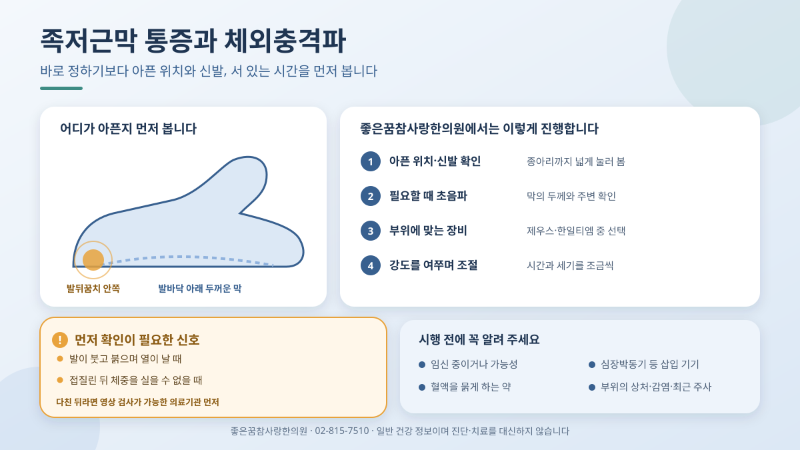

이종호 한의사 감수좋은꿈참사랑한의원 대표원장 (한의사 면허번호 19769)발행 2026-11-24 · 수정 2026-11-26
이 글의 차례
아침에 침대에서 내려와 첫발을 디딜 때 발뒤꿈치가 찌릿하다면 발바닥 아래 두꺼운 막(족저근막) 쪽 부담을 먼저 생각해 볼 수 있습니다. 좋은꿈참사랑한의원에서는 체외충격파를 바로 정하기보다 아픈 위치와 신발, 서 있는 시간을 먼저 확인하고, 필요하다고 판단될 때 시간과 세기를 조금씩 조절하며 씁니다.
왜 이런 불편이 생길 수 있나요
- 오래 서 있거나 많이 걷는 날이 이어지면 발바닥 아래 막이 당기는 부담이 쌓일 수 있습니다.
- 쿠션이 닳은 신발, 딱딱한 바닥, 집 안 맨발 생활이 발뒤꿈치 충격을 더하기도 합니다.
- 종아리와 아킬레스힘줄이 뻣뻣하면 걸을 때마다 발바닥이 더 당겨지는 경우가 있습니다.
- 운동량이나 체중이 짧은 기간에 늘어난 뒤 시작되는 분도 많습니다.
- 밤사이 발바닥 막이 짧아진 채로 쉬다가 아침에 갑자기 늘어나면서 첫걸음이 가장 불편하게 느껴질 수 있습니다.
생활에 따라 시작되는 모습도 다릅니다.
- 예를 들어 매장에서 하루 종일 서서 일하는 직장인이라면 퇴근 무렵보다 다음 날 아침 첫걸음이 더 아프다고 말씀하시는 경우가 많습니다.
- 예를 들어 걷기 운동을 새로 시작한 어르신이 몇 주 만에 걷는 시간을 크게 늘렸다면, 늘린 시점과 통증이 시작된 시점을 함께 살펴봅니다.
- 예를 들어 아이를 안고 집 안을 맨발로 오래 서성이는 육아 중인 분이라면, 실내에서 신는 신발부터 함께 이야기합니다.
먼저 이렇게 여쭙니다
- 아침 첫걸음이나 오래 앉았다 일어설 때 가장 아픈가요?
- 아픈 곳이 발뒤꿈치 안쪽인가요, 발바닥 가운데인가요?
- 하루에 서 있거나 걷는 시간, 주로 신는 신발은 어떤가요?
- 최근 운동량이나 체중에 변화가 있었나요?
- 예전에 같은 부위를 다치거나 주사 치료를 받은 적이 있나요?
- 발 말고도 무릎이나 허리처럼 함께 불편한 곳이 있나요?
- 요즘 잠은 어떤지, 피로가 쌓여 있지는 않은가요?
오시기 전에 스스로 확인해 보셔도 좋습니다.
- 아침 첫 몇 걸음이 가장 아프고, 조금 걸으면 덜해지나요?
- 발뒤꿈치 안쪽 한 지점을 엄지로 누르면 콕 찌르듯 아픈가요?
- 계단을 오를 때 발뒤꿈치보다 종아리가 먼저 당기나요?
- 지금 신는 운동화나 구두의 뒤꿈치 쿠션이 한쪽으로 닳았나요?
- 한쪽 발만 아픈가요, 양쪽이 번갈아 아픈가요?
- 발바닥이 저리거나 화끈거리는 느낌이 함께 있나요?
일상에서 먼저 해 볼 수 있는 것
- 일어나기 전 누운 채 발목을 위아래로 10번쯤 천천히 움직인 뒤 일어서기
- 벽을 짚고 종아리를 20~30초씩 늘려 주기를 하루 2~3번
- 집 안에서도 맨발 대신 바닥이 푹신한 실내화 신기
- 통증이 심한 동안에는 오래 뛰거나 등산하는 일 줄이기
- 오래 서 있는 날은 중간중간 앉아서 발을 쉬게 하기
- 앉아 있을 때 발바닥 아래로 작은 공이나 물병을 천천히 굴리되, 아플 만큼 세게 누르지 않기
이렇게 생활을 바꾸고 2주쯤 지켜봐도 아침 첫걸음 통증이 그대로이거나, 걷는 모습이 달라질 만큼 아프다면 미루지 말고 진찰을 받아 보세요. 반대로 넘어지거나 발을 접질린 뒤 갑자기 아파져 체중을 싣기 어렵다면 지켜보기보다 바로 영상 검사가 가능한 의료기관에서 확인하는 편이 안전합니다.
통증이 덜해졌다고 바로 예전처럼 오래 뛰거나 등산을 다시 시작하면 다시 불편해지는 경우가 있습니다. 걷는 시간은 며칠 단위로 조금씩 늘리고, 다음 날 아침 첫걸음이 어땠는지를 기준으로 삼아 보세요. 다음 날 아침이 전보다 더 아프다면 그 전 단계로 돌아가 며칠 더 머무는 것이 좋습니다.
한의원에서 함께 살필 수 있는 경우
- 아침 첫걸음 통증이 몇 주째 이어지는 경우 아픈 지점과 걷는 모습을 함께 살핍니다.
- 발바닥과 함께 종아리, 무릎까지 뻐근한 경우 다리 전체의 긴장을 함께 봅니다.
- 오래 서서 일해 쉬기 어려운 경우 일하는 자세와 신발을 함께 점검합니다.
좋은꿈참사랑한의원에서는 아픈 부위와 주변, 종아리까지 넓게 눌러 보고 필요하다고 판단될 때 초음파로 막의 두께와 주변을 확인합니다.
체외충격파는 제우스와 한일티엠 두 장비 가운데 부위에 맞는 것을 골라, 느끼는 강도를 여쭈며 시간과 세기를 조절하고 상태에 따라 침·약침과 이어서 씁니다. 반응이 충분하지 않으면 방법을 바꾸거나 다른 의료기관 진료를 안내합니다.
첫 방문에는 아픈 시기와 하루 생활을 먼저 듣고 맥부터 짚어 본 뒤, 서 있는 모습과 걷는 모습을 보고 발뒤꿈치와 종아리를 눌러 가장 아픈 지점을 표시해 둡니다. 체외충격파를 하게 되면 시행 전에 주의할 점을 확인하고, 귀가 전에는 집에서 할 종아리 늘리기와 다음에 다시 확인할 동작을 알려 드립니다.
다시 오시면 지난번 이후 아침 첫걸음 통증 점수가 어떻게 달라졌는지부터 여쭙고, 처음 표시해 둔 지점을 같은 힘으로 눌러 비교합니다. 발바닥만이 아니라 잠, 피로, 몸이 붓는 정도처럼 몸 전체의 흐름도 함께 확인해, 쉬는 시간이 부족한 시기라면 치료 간격과 생활 조절을 함께 다시 이야기합니다.
함께 읽어 보시면 좋은 글입니다.
- 아침 첫걸음에 발뒤꿈치가 아플 때
- 발뒤꿈치 두께를 초음파로 확인하는 경우
- 체외충격파 치료 뒤 주의할 점과 기록
이렇게 기록해 오시면 상담이 쉬워집니다
- 아침 첫걸음 통증을 0~10 숫자로 며칠 적은 기록
- 하루 걸음 수나 서 있는 시간, 주로 신은 신발
- 통증이 심해진 날 했던 일(등산, 오래 서기 등)
- 복용 중인 약, 특히 혈액을 묽게 하는 약
- 평소 신는 신발 한 켤레(뒤꿈치 닳은 모양을 함께 봅니다)
- 다른 의료기관에서 받은 영상 검사 결과지가 있다면 그 사본
시행 전에 꼭 알려 주세요
- 임신 중이거나 임신 가능성이 있는 경우
- 심장박동기 등 몸 안에 삽입한 기기가 있는 경우
- 혈액 응고를 늦추는 약을 복용 중이거나 출혈이 잘 되는 경우
- 치료할 부위에 상처, 감염, 종양이 있거나 최근 주사를 맞은 경우
이런 증상은 먼저 확인이 필요합니다
- 발이 붓고 붉으며 열이 나는 경우
- 넘어지거나 접질린 뒤 체중을 실을 수 없는 경우
이런 신호가 있으면 한의원보다 가까운 병원이나 응급실을 먼저 찾으세요.

여쭙는 것
- 아침 첫걸음이나 오래 앉았다 일어설 때 가장 아픈가요?
- 아픈 곳이 발뒤꿈치 안쪽인가요, 발바닥 가운데인가요?
- 하루에 서 있거나 걷는 시간, 주로 신는 신발은 어떤가요?
생활에서 해 볼 것
- 일어나기 전 누운 채 발목을 위아래로 10번쯤 천천히 움직인 뒤 일어서기
- 벽을 짚고 종아리를 20~30초씩 늘려 주기를 하루 2~3번
- 집 안에서도 맨발 대신 바닥이 푹신한 실내화 신기
한의원에서 함께 살필 것
- 아침 첫걸음 통증이 몇 주째 이어지는 경우 아픈 지점과 걷는 모습을 함께 살핍니다.
- 발바닥과 함께 종아리, 무릎까지 뻐근한 경우 다리 전체의 긴장을 함께 봅니다.
- 오래 서서 일해 쉬기 어려운 경우 일하는 자세와 신발을 함께 점검합니다.
먼저 확인이 필요한 신호
- 발이 붓고 붉으며 열이 나는 경우
- 넘어지거나 접질린 뒤 체중을 실을 수 없는 경우
한눈에 보는 표
| 구분 | 핵심 |
|---|---|
| 여쭙는 것 | 아침 첫걸음이나 오래 앉았다 일어설 때 가장 아픈가요? 아픈 곳이 발뒤꿈치 안쪽인가요, 발바닥 가운데인가요? |
| 생활에서 해 볼 것 | 일어나기 전 누운 채 발목을 위아래로 10번쯤 천천히 움직인 뒤 일어서기 벽을 짚고 종아리를 20~30초씩 늘려 주기를 하루 2~3번 |
| 한의원에서 함께 살필 것 | 아침 첫걸음 통증이 몇 주째 이어지는 경우 아픈 지점과 걷는 모습을 함께 살핍니다. 발바닥과 함께 종아리, 무릎까지 뻐근한 경우 다리 전체의 긴장을 함께 봅니다. |
| 먼저 확인이 필요한 신호 | 발이 붓고 붉으며 열이 나는 경우 넘어지거나 접질린 뒤 체중을 실을 수 없는 경우 |
자주 묻는 질문
체외충격파는 몇 번 받나요?
사람과 부위에 따라 다릅니다. 매번 반응을 확인하며 횟수와 간격을 정하고 진찰 후 안내해 드립니다.
치료받을 때 많이 아픈가요?
예민한 지점에서는 찌릿한 불편이 있을 수 있어, 느끼는 강도를 계속 여쭈며 세기를 조절합니다.
신발도 바꿔야 하나요?
신발과 서 있는 시간이 통증에 영향을 줄 수 있어 지금 신는 신발을 함께 살펴보고 바꿀 점을 이야기합니다.
깔창을 쓰면 도움이 되나요?
발 모양과 신발에 따라 다릅니다. 지금 쓰는 깔창이나 신발을 가져오시면 함께 보고 이야기합니다.
체외충격파를 받은 날 걸어도 되나요?
평소처럼 걷는 정도는 대개 괜찮지만, 그날은 오래 뛰거나 등산하는 일은 피하시는 편이 좋습니다. 자세한 기준은 부위와 반응을 보고 안내해 드립니다.
좋은꿈참사랑한의원은 재진 때 지난번 이야기부터 이어서 여쭙니다. 진료시간과 예약은 오시는 길에서 확인하세요.
어디서 상담받을 수 있나요?
좋은꿈참사랑한의원은 서울 동작구 만양로2길 2 신성빌딩 3층·5층(서울 동작구 상도동, 7호선 상도역 3번 출구 근처)에 있습니다. 한의사 3명(이종호 대표원장, 조영기 수석진료원장, 정원영 진료원장)이 진료합니다. 진료시간은 평일 09:30~20:00(점심 13:00~14:00), 토·일·공휴일 09:30~15:00이며, 방문 전 전화로 확인을 권합니다. 예약은 네이버 예약, 카카오톡 상담, 전화 02-815-7510로 받습니다.
이 글은 일반적인 건강 정보이며 개인의 진단이나 치료를 대신하지 않습니다. 증상이 있거나 복용 중인 약이 있다면 진료를 통해 확인하세요. 치료 효과는 개인마다 다를 수 있습니다.
작성 기준: 일반적으로 알려져 있는 건강 정보를 참고해 정리했습니다(대표원장 감수). 증상 기록은 1~2주 동안 하루 1회, 비슷한 시간에 적어 오시면 지난 상태와 비교하기 쉽습니다.